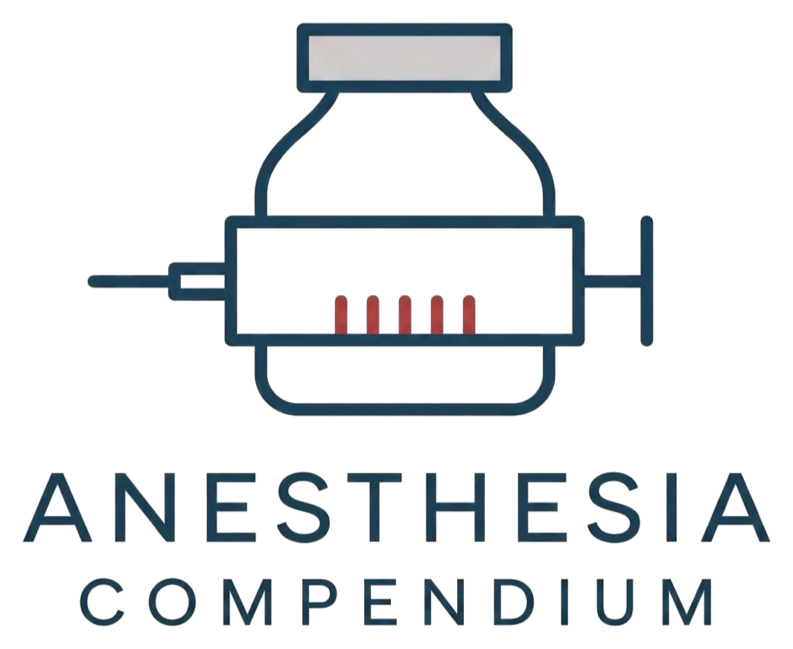
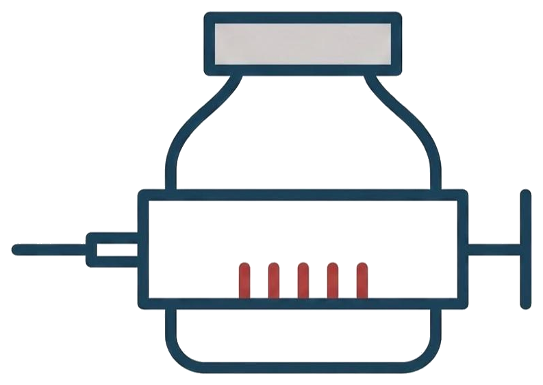

Master the anaesthesia viva.
Examiner-and-candidate viva stations across pharmacology and physiology — read the full Q&A, listen with a live synced transcript, or watch the video.
Free · Exam-focused · New stations added regularly
0Topics
0Viva questions
0Hours of audio
0Topics planned
Three ways to study every topic
Pick how you learn best — the same station, three formats.
01 · Read
Clean Q&A text
The whole viva as examiner question and candidate answer — skim, search, and revise fast.
Read the Q&A → 02 · ListenAudio + live transcript
Hands-free revision. Every sentence highlights in real time as it's spoken — tap to jump.
Start listening → 03 · WatchLyric-video player
The full station as video with on-screen subtitles and a clickable, synced transcript.
Open the player →
Don't miss a single station.
We're building toward 350 topics. Subscribe to get every new viva the moment it drops — and keep your revision one step ahead.
Subscribe to Anaesthesia CompendiumIt's free. New stations added regularly.